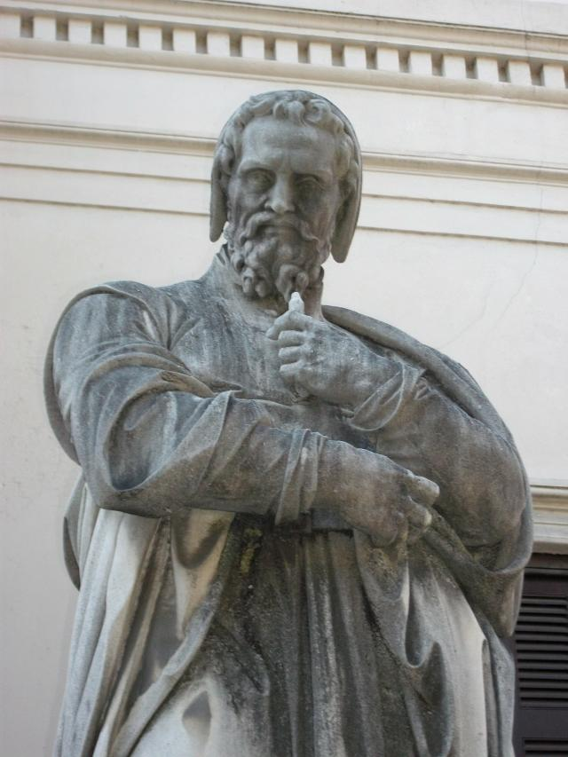

Welcome to the Mathematical World!
Anaximander of Miletus
The Boundless Philosopher
Anaximander (c. 610 BCE – c. 546 BCE) was a Pre-Socratic Greek philosopher, astronomer, and cartographer, and a student of Thales of Miletus. He is often credited as one of the earliest thinkers to attempt a scientific explanation of the cosmos without relying on myth. His ideas about the origin of the universe, the Earth’s position in space, and the principle of the apeiron (the boundless) make him one of the founders of natural philosophy.
Background
Anaximander was born in Miletus, a wealthy Ionian city, where early Greek science and philosophy flourished. Like his teacher Thales, he sought natural explanations for phenomena rather than divine myths. He is said to have been politically active and may have even designed the first map of the known world.
Key Contributions
-
(a) The Apeiron
Anaximander proposed that the origin (\(\text{archê}\)) of all things is not a specific element like water (as Thales believed), but something indefinite, eternal, and infinite — the apeiron (“boundless” or “infinite”).
From the apeiron, opposites such as hot/cold, wet/dry separate to form the cosmos.
This was one of the earliest abstract principles in philosophy. -
(b) Cosmology
Anaximander believed the Earth floats unsupported in space, not held by anything — a radical idea at the time.
He thought the Earth was cylindrical in shape, like a drum, with humans living on the flat top.
He explained celestial bodies as fiery rings encased in air, with holes through which light escapes (appearing as the Sun, Moon, and stars). -
(c) Astronomy & Instruments
He is credited with introducing the gnomon (a sundial-like device) to Greece, allowing measurement of solstices and equinoxes.
He proposed a model of the heavens where the Sun, Moon, and stars are located on concentric circles around Earth at different distances. -
(d) Biology & Evolutionary Thought
Anaximander speculated about the origin of life:
Life began in moisture, heated by the Sun.
Humans originally came from fish-like creatures, since human infants are too helpless to survive alone.
This makes him one of the earliest thinkers to propose a kind of evolutionary theory.
Influence and Legacy
- On Greek Philosophy: His idea of the apeiron influenced later philosophers such as Anaximenes, Aristotle, and the Stoics.
- On Science: His theory of a self-suspended Earth anticipated later astronomical reasoning.
- On Cartography: He drew one of the earliest maps of the world, making geography a field of study.
- On Biology: His idea of life arising from water influenced later naturalists like Empedocles and even foreshadows Darwinian thinking.
Legacy
Anaximander was a true pioneer, bridging myth and science. By proposing the apeiron as the eternal source of all things, and by imagining the Earth floating in space, he moved philosophy toward abstraction and scientific inquiry. His vision of the cosmos laid foundations for both philosophy and astronomy, making him one of the great minds of early Greek thought.